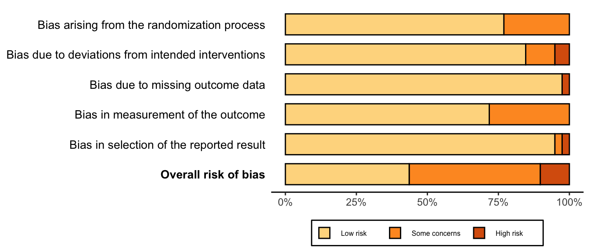
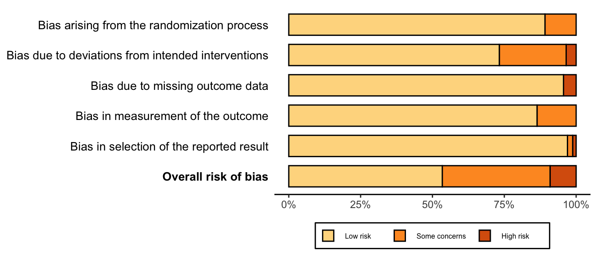
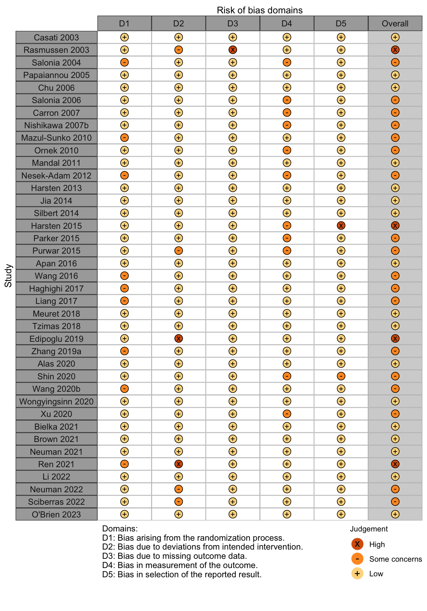

| Outcome | RCT | Regional | General | GRADE | Effect | Estimate (95% CI) |
|---|---|---|---|---|---|---|
| N (Total) | N (Total) | |||||
| Delirium | 12 | 231 (1947) | 229 (1928) | Moderate |
RR | 0.97 (0.69–1.36) |
| Delayed neurocognitive recovery | 4 | 78 (336) | 88 (355) | Low |
RR | 0.91 (0.56–1.48) |
| Postoperative neurocognitive disorder | 1 | 23 (176) | 25 (188) | Very low |
RR | 0.98 (0.58–1.67) |
| Physical function | 1 | (31) | (28) | Very low |
SMD | 0.26 (-0.25 to 0.78) |
| Complications* | 17 | Low/very low |
See following table | |||
| Patient satisfaction | 10 | 913 (1055) | 839 (991) | Very low |
RR | 1.02 (0.98 to 1.05)† |
| Length of stay (days) | 14 | (1607) | (1622) | Very low |
MD | -0.5 (-1.3 to 0.3) |
| Discharged to institution | 1 | 576 (777) | 586 (777) | Very low |
RR | 0.98 (0.93-1.04) |
| Mortality (in-hospital and 30-day) | ||||||
| All procedures | 8 | 38 (3711) | 58 (3708) | RR | 0.68 (0.43–1.07) | |
| 10 | 38 (3788) | 58 (3789) | RD‰ | -5.2 (-10.4 to -0.1) | ||
| Hip fracture | 4 | 19 (1467) | 27 (1478) | RR | 0.73 (0.22–2.39) | |
| 5 | 19 (1486) | 27 (1499) | RD‰ | -3.9 (-17.7 to 9.9) | ||
| Other | 4 | 19 (2184) | 31 (2170) | RR | 0.65 (0.35–1.22) | |
| 6 | 19 (2302) | 31 (2290) | RD‰ | -5.6 (-9.9 to -1.3) | ||
| Mortality (90-day) | 3 | 15 (427) | 16 (441) | Low |
RR | 0.68 (0.43–1.07) |
| RD‰ | -4.1 (-16.4 to 8.2) | |||||
| RCT: randomized clinical trial; GRADE: Grades of Recommendation, Assessment, Development, and Evaluation; RR: risk ratio; RD‰: risk difference per 1000. | ||||||
| * Complications reported variously across the 17 trials. | ||||||
| † Comparing higher/highest category or categories compared with lower ones. | ||||||
Regional versus General Anesthesia
Recent upates (last 2023-11-09 13:26)
| Date | Modification |
|---|---|
| 2023-11-08 | Updated to most current included studies. Removed risk of bias tallies from forest plots where not pertinent to outcome. Used weighted risk of bias summary for delirium and added for overall. Added risk differences per 1000 to complications and mortality. |
| 2023-11-09 | Added balance tables (also appearing in appendix). |
Key Question
Among older patients undergoing surgery and anesthesia, does regional anesthesia as the primary anesthetic technique improve postoperative outcomes compared with general anesthesia?
Balance Tables
Benefits, harms, and strength of evidence (GRADE) for regional versus general anesthesia.
Included complications and strength of evidence (GRADE) for regional versus general anesthesia.
| Outcome | RCT | Regional | General | GRADE | Effect* | Estimate (95% CI) |
|---|---|---|---|---|---|---|
| N (Total) | N (Total) | |||||
| Myocardial infarction | 6 | 21 (3426) | 16 (3352) | Low |
RR | 1.17 (0.59–2.32) |
| RD‰ | 1.9 (-0.6 to 4.5) | |||||
| Cardiac arrest | 2 | 2 (874) | 0 (888) | Very low |
RD‰ | 2.3 (-2.2 to 6.7) |
| Stroke | 5 | 75 (2786) | 79 (2776) | Low |
RR | 0.93 (0.68–1.26) |
| RD‰ | -1.7 (-6.2 to 2.7) | |||||
| Renal | 4 | 33 (1118) | 58 (1129) | Low |
RR | 0.59 (0.39–0.89) |
| RD‰ | -11.8 (-28.5 to 4.5) | |||||
| Pulmonary complications† | 2 | 4 (88) | 10 (148) | Very low |
RR | 0.81 (0.28–2.35) |
| RD‰ | -14.7 (-77.7 to 48.3) | |||||
| Pneumonia | 8 | 14 (1834) | 27 (1754) | Low |
RR | 0.50 (0.26–0.96) |
| RD‰ | -3.8 (-10.2 to 2.6) | |||||
| Pulmonary congestion | 1 | 9 (783) | 8 (793) | Very low |
RR | 1.14 (0.44–2.94) |
| RD‰ | 1.4 (-8.8 to 11.6) | |||||
| Pulmonary embolism | 6 | 7 (2055) | 13 (1406) | Low |
RR | 0.56 (0.27–1.16) |
| 8 | 7 (3317) | 13 (3253) | RD‰ | -0.1 (-1.1 to 0.8) | ||
| Reintubation | 1 | 4 (783) | 7 (793) | Very low |
RR | 0.37 (0.17–1.97) |
| RD‰ | -3.7 (-11.9 to 4.5) | |||||
| RCT: randomized clinical trial; GRADE: Grades of Recommendation, Assessment, Development, and Evaluation; RR: risk ratio; RD‰: risk difference per 1000. | ||||||
| * Fixed/common effects models when 2 studies. | ||||||
| † Complications reported included pneumonia, respiratory failure, or unspecified. | ||||||
Outcome Importance
Outcomes Reported
| Outcome | RCT, N = 46 |
|---|---|
| ADL | 3 (6.5%) |
| Complications | 23 (50%) |
| Delayed NCR/POCD | 5 (11%) |
| Delirium | 13 (28%) |
| Delirium duration | — |
| Depression | — |
| Discharge location | 1 (2.2%) |
| Mortality | 12 (26%) |
| Opioid use | 1 (2.2%) |
| Pain | 4 (8.7%) |
| QoR | — |
| Readmission | 2 (4.3%) |
| Satisfaction | 10 (22%) |
| ADL: activities of daily living; NCR: neurocognitive recovery; POCD: postoperative neurocognitive disorder; QoR: quality of recovery; RCT: randomized clinical trial. | |
| Outcome | RCT, N = 46 |
|---|---|
| 6-minute walk | — |
| Delirium duration | 1 (2.2%) |
| Grip strength | — |
| Length of stay | 14 (30%) |
| Opioid use | 8 (17%) |
| Pulmonary function | — |
| RCT: randomized clinical trial. | |
| Outcome | RCT, N = 46 |
|---|---|
| ADL | 1 (2.2%) |
| Delayed NCR/POCD | 11 (24%) |
| Delirium | 1 (2.2%) |
| Complications | 1 (2.2%) |
| Depression/anxiety | 5 (11%) |
| Pain | 19 (41%) |
| Quality of life | 1 (2.2%) |
| QoR | 1 (2.2%) |
| Satisfaction | 2 (4.3%) |
| ADL: activities of daily living; NCR: neurocognitive recovery; POCD: postoperative neurocognitive disorder; QoR: quality of recovery; RCT: randomized clinical trial. | |
Included Studies
| Design | Studies |
|---|---|
| Randomized Clinical Trial | 45 |
| Total | 45 |
| Studies with multiple publications counted only once (applied to 1 trial with 2 publications). | |
Design, centers, country, and surgery
| ID | Study | Centers | Enrolled | Countrya | Surgeryb |
|---|---|---|---|---|---|
| 221 | 1 | 36 | Turkey | Ortho | |
| 6540 | 1 | 90 | Ukrainea | Ortho | |
| 14441 | 1 | 30 | Italy | Ortho | |
| 14566 | 1 | 60 | Chinaa | Ortho | |
| 2252 | 1 | 80 | Turkey | Ortho | |
| 7744 | 1 | 94 | China | Ortho | |
| 13669 | 1 | 100 | Irana | Ortho | |
| 208 | 1 | 124 | Sweden | Ortho | |
| 269 | 1 | 120 | Sweden | Ortho | |
| 7490 | 9 | 950 | China | Ortho | |
| 4782 | 1 | 198 | Chinaa | Ortho | |
| 5894 | 1 | 60 | Indiaa | Ortho | |
| 6072 | 1 | 40 | France | Ortho | |
| 16596 | 1 | 12 | USA | Ortho | |
| 8117 | 46 | 1600 | USA | Ortho | |
| 17100 | 46 | 1600 | USA | Ortho | |
| 1335 | 1 | 322 | UK | Ortho | |
| 13141 | 1 | 281 | Chinaa | Ortho | |
| 6424 | 1 | 90 | Sweden | Ortho | |
| 6109 | 1 | 186 | South Korea | Ortho | |
| 1320 | 1 | 72 | Greece | Ortho | |
| 2020 | 1 | 25 | Chinaa | Ortho | |
| 158 | 1 | 240 | Chinaa | Ortho | |
| 1489 | 1 | 80 | Chinaa | Ortho | |
| 3218 | 1 | 61 | USA | Urol | |
| 397 | 1 | 80 | Japan | Urol | |
| 737 | 1 | 60 | Turkeya | Urol | |
| 296 | 1 | 72 | Italy | Urol | |
| 329 | 1 | 121 | Italy | Urol | |
| 781 | 1 | 98 | Australia | Urol | |
| 14396 | 1 | 60 | Norway | GI/Abdominal | |
| 16573 | 1 | 240 | Chinaa | GI/Abdominal | |
| 6132 | 1 | 206 | Chinaa | GI/Abdominal | |
| 658 | 1 | 54 | Thailand | GI/Abdominal | |
| 15278 | 1 | 52 | Turkey | Neuro | |
| 241 | 1 | 57 | Croatia | Neuro | |
| 2592 | 95 | 3526 | UK | Neuro|Vasc | |
| 315 | 1 | 40 | Germany | Neuro|Vasc | |
| 2518 | 1 | 186 | Germany | Cardiac | |
| 262 | 1 | 60 | UK | Gyn | |
| 1400 | 1 | 50 | Greece | Gyn|Ortho|Urol|Vasc | |
| 16379 | 1 | 60 | France | Headneck | |
| 239 | 1 | 40 | Italy | Other | |
| 7554 | 1 | 219 | USA | Spine | |
| 831 | 12 | 428 | Denmark | Various | |
| 307 | 1 | 40 | Croatia | Vasc | |
| GI: gastrointestinal; Ortho: orthopedic; Urol: urological; Neuro: neurological; Oralmax: oral maxillofacial; Vasc: vascular. | |||||
| a Non very-high Human Development Index country. | |||||
| b Various indicates 4 or more different types of surgery. | |||||
Country Summary
| N = 45a | |
|---|---|
| Country | |
| China | 10 (22%) |
| USA | 5 (11%) |
| Italy | 4 (8.9%) |
| Turkey | 4 (8.9%) |
| Sweden | 3 (6.7%) |
| Croatia | 2 (4.4%) |
| France | 2 (4.4%) |
| Germany | 2 (4.4%) |
| Greece | 2 (4.4%) |
| UK | 2 (4.4%) |
| Australia | 1 (2.2%) |
| Denmark | 1 (2.2%) |
| India | 1 (2.2%) |
| Iran | 1 (2.2%) |
| Japan | 1 (2.2%) |
| Norway | 1 (2.2%) |
| South Korea | 1 (2.2%) |
| Thailand | 1 (2.2%) |
| Ukraine | 1 (2.2%) |
| a n (%) | |
Comparators
| Regional | |||||||||||||
|---|---|---|---|---|---|---|---|---|---|---|---|---|---|
| Study | N | Comparator | ASA | Agea | MMSEa | General | Neuraxial | Block | |||||
| PS | Vol | TIVA | NR | Spinal | Epid | CSE | NR | ||||||
| Ortho — HipFx | |||||||||||||
| 15 | Gen | 23 | 84.0 [67-88] |
29 [24-29] |
● | ||||||||
| 15 | Neur | 23 | 84.0 [71-94] |
28 [25-30] |
✖ | ||||||||
| 164 | Gen | 1234 | 83.0 [59-99] |
● | |||||||||
| 158 | Neur | 1234 | 82.9 [25-105] |
✖ | |||||||||
| 6 | Gen | NR | 62.5 [57-88] |
● | |||||||||
| 6 | Neur | NR | 80.5 [62-92] |
✖ | |||||||||
| 50 | Gen | 123 | 66.0 (4.8) |
● | |||||||||
| 50 | Neur | 123 | 66.2 (5.2) |
✖ | |||||||||
| 66 | Gen | 123 | 68.0 (11.0) |
26.7 (1.6) |
● | ||||||||
| 66 | Neur | 123 | 67.0 (12.0) |
26.8 (2.0) |
✖ | ||||||||
| 66 | Neur | 123 | 66.0 (10.0) |
26.6 (1.9) |
✖ | ||||||||
| 21 | Gen | 123 | 85.0 (5.0) |
21 [12-24] |
● | ||||||||
| 19 | Neur | 123 | 83.0 (6.0) |
19 [12-26] |
✖ | ||||||||
| 33 | Gen | 123 | 75.1 (6.1) |
25.7 (2.9) |
● | ||||||||
| 37 | Neur | 123 | 77.1 (6.5) |
25.3 (0.9) |
✖ | ||||||||
| 58 | Gen | NR | 80.5 (6.7) |
● | |||||||||
| 60 | Gen | NR | 79.4 (7.7) |
● | |||||||||
| 58 | Neur | NR | 81.6 (6.7) |
✖ | |||||||||
| 30 | Gen | NR | 73.0 {72-74} |
● | |||||||||
| 30 | Block | NR | 72.0 {68-73} |
✔ | |||||||||
| 30 | Neur | NR | 72.0 {70-73} |
✖ | |||||||||
| 45 | Gen | 23 | 69.3 [60-91] |
● | |||||||||
| 42 | Block | 23 | 74.5 [60-88] |
✔ | |||||||||
| 804 | Gen | 1234 | 78.4 (10.6) |
● | |||||||||
| 795 | Neur | 1234 | 77.7 (10.7) |
✖ | |||||||||
| 154 | Gen | 123 | 74.1 (4.2) |
25.6 (1.4) |
● | ||||||||
| 127 | Neur | 123 | 73.1 (6.2) |
25.7 (1.2) |
✖ | ||||||||
| 471 | Gen | 1234 | 77.0 {71-82} |
20 {15-25} |
● | ● | |||||||
| 471 | Neur | 1234 | 77.0 {72-82} |
20 {15-24} |
✖ | ✖ | ✖ | ||||||
| 796 | Gen | NR | 78.0 (11.0) |
● | |||||||||
| 795 | Neur | NR | 78.0 (11.0) |
✖ | |||||||||
| Ortho — HipFx|Other | |||||||||||||
| 40 | Gen | NR | 69.4 (2.6) |
● | |||||||||
| 40 | Neur | NR | 69.4 (2.6) |
✖ | |||||||||
| Ortho — TKA|THA|HipFx|Other | |||||||||||||
| 30 | Gen | 12 | 67.1 (7.1) |
27.3 (1.8) |
● | ||||||||
| 30 | Neur | 12 | 66.6 (5.6) |
28.0 (1.3) |
✖ | ||||||||
| Ortho — TKA | |||||||||||||
| 30 | Gen | 123 | 69.0 {62-74} |
● | |||||||||
| 30 | Neur | 123 | 65.0 {62-68} |
✖ | |||||||||
| NR | Gen | NR | 67.2 [58-78] |
● | |||||||||
| NR | Neur | NR | 67.9 [62-77] |
✖ | |||||||||
| 60 | Gen | 123 | 68.0 (7.0) |
● | |||||||||
| 60 | Neur | 123 | 67.0 (7.0) |
✖ | |||||||||
| 26 | Gen | NR | 68.8 (4.9) |
22.6 (3.0) |
● | ||||||||
| 31 | Neur | NR | 69.8 (4.4) |
22.6 (2.7) |
✖ | ||||||||
| Ortho — THA | |||||||||||||
| 60 | Gen | 123 | 68.0 (9.0) |
● | |||||||||
| 58 | Neur | 123 | 66.0 (7.8) |
✖ | |||||||||
| 80 | Gen | NR | 75.4 (5.6) |
● | |||||||||
| 80 | Neur | NR | 75.6 (5.5) |
✖ | |||||||||
| 80 | Neur | NR | 75.0 (5.2) |
✖ | |||||||||
| Ortho | |||||||||||||
| 13 | Gen | NR | 58.4 (7.3) |
● | |||||||||
| 12 | Neur | NR | 62.7 (8.7) |
✖ | |||||||||
| 29 | Gen | 123 | 57.4 (15.3) |
● | |||||||||
| 28 | Blockc | 123 | 62.3 (13.1) |
✔ | |||||||||
| 27 | Blockd | 123 | 60.3 (10.4) |
✔ | |||||||||
| Urol | |||||||||||||
| 34 | Gen | NR | 66.0 (6.8) |
● | |||||||||
| 36 | Neur | NR | 65.3 (6.9) |
✖ | |||||||||
| 34 | Gen | NR | 66.0 (7.0) |
● | |||||||||
| 30 | Neure | NR | 59.5 (10.4) |
✖ | |||||||||
| 29 | Neurf | NR | 64.1 (8.1) |
✖ | |||||||||
| 28 | Neurg | NR | 65.3 (6.3) |
✖ | |||||||||
| 40 | Gen | 12 | 73.0 (6.0) |
● | |||||||||
| 40 | Neur | 12 | 71.0 (6.0) |
✖ | |||||||||
| 30 | Gen | 23 | 70.0 (9.6) |
● | |||||||||
| 30 | Neur | 23 | 76.4 (11.8) |
✖ | |||||||||
| 50 | Gen | NR | 63.9 [55-78] |
● | |||||||||
| 48 | Neur | NR | 66.9 [56-75] |
✖ | |||||||||
| 29 | Gen | NR | 63.7 (11.4) |
● | |||||||||
| 29 | Neur | NR | 67.3 (10.9) |
✖ | |||||||||
| GI/Abdominal | |||||||||||||
| 30 | Gen | 123 | 56.0 (17.0) |
● | |||||||||
| 30 | Block | 123 | 63.0 (13.0) |
✔ | |||||||||
| 116 | Gen | NR | 74.8 (4.0) |
● | |||||||||
| 117 | Neur | NR | 75.7 (4.2) |
✖ | |||||||||
| 103 | Gen | NR | 71.9 (8.4) |
● | |||||||||
| 103 | Neur | NR | 71.2 (7.9) |
✖ | |||||||||
| 18 | Gen | 123 | 67.7 (15.1) |
● | |||||||||
| 18 | Neur | 123 | 64.9 (10.3) |
✖ | |||||||||
| Neuro | |||||||||||||
| 28 | Gen | NR | 66.0 (8.7) |
● | |||||||||
| 29 | Neur | NR | 66.2 (8.3) |
✖ | |||||||||
| 25 | Gen | 123 | 62.7 (14.3) |
● | |||||||||
| 25 | Neur | 123 | 67.0 (10.4) |
✖ | |||||||||
| Neuro|Vasc | |||||||||||||
| 1752 | Gen | 1234 | 70.0 (8.8) |
● | |||||||||
| 1771 | Block | 1234 | 69.0 (8.8) |
✔ | |||||||||
| 23 | Gen | NR | 67.0 (9.0) |
● | |||||||||
| 17 | Block | NR | 66.0 (8.0) |
✔ | |||||||||
| Cardiac | |||||||||||||
| 95 | Gen | NR | 69.0 (8.0) |
● | |||||||||
| 91 | Block | NR | 69.0 (8.0) |
✔ | |||||||||
| Gyn | |||||||||||||
| 28 | Gen | 123 | 65.1 (12.5) |
● | |||||||||
| 31 | Neur | 123 | 60.6 (11.5) |
✖ | |||||||||
| Gyn|Ortho|Urol|Vasc | |||||||||||||
| 28 | Gen | 1234 | ≥60 |
28.1 |
● | ● | |||||||
| 19 | Neur | 1234 | ≥60 |
27.6 |
✖ | ✖ | |||||||
| Headneck | |||||||||||||
| 30 | Gen | 1234 | 75.0 (9.0) |
● | |||||||||
| 30 | Block | 1234 | 76.0 (11.0) |
✔ | |||||||||
| Other | |||||||||||||
| 20 | Gen | 123 | 62.6 (10.7) |
● | |||||||||
| 20 | Neur | 123 | 65.5 (16.8) |
✖ | |||||||||
| Various TKA|THA|Other | |||||||||||||
| 217 | Gen | 1234 | 70.8 [61-84] |
● | |||||||||
| 211 | Neur | 1234 | 71.1 [61-84] |
✖ | ✖ | ||||||||
| Vasc | |||||||||||||
| 20 | Gen | 23 | 61.2 (10.5) |
● | |||||||||
| 20 | Neur | 23 | 60.6 (9.7) |
✖ | |||||||||
| Spine | |||||||||||||
| 106 | Gen | NR | 72.0 {69-76} |
28 {27-29} |
● | ||||||||
| 111 | Neur | NR | 73.0 {69-78} |
29 {27-29} |
✖ | ||||||||
| Gen: general; Neur: neuraxial; PS: physical stutus; Vol: volatile; TIVA: total intravenous anesthesia; NR: not reported; Epid: epidural; CSE: combined spinal and regional; Ortho: orthopedic; Urol: urological; GI: gastrointestinal; Neuro: neurologic; Gyn: gynecologic; Vasc: vascular; Ophtho: opthalomogic; Fx: fracture; TKA: total knee arthroplasty; THA: total hip arthroplasty. | |||||||||||||
| a Mean Med (SD)[Range]{IQR}. | |||||||||||||
| b Not included in pooled results owing to size. | |||||||||||||
| c Ropivacaine. | |||||||||||||
| d Mepivacaine. | |||||||||||||
| e Propofol. | |||||||||||||
| f Midazolam. | |||||||||||||
| g Diazepam. | |||||||||||||
Delirium Incidence
| Study | N | Arm | MMSE (preop)a |
Scale | Daysb | Incidence Proportion | RR (95% CI) | |
|---|---|---|---|---|---|---|---|---|
| N (%) | 0 – 100% | |||||||
| Hip fx | ||||||||
| 164 | Gen | NR | Stay | 0 (0.0) | — | |||
| 158 | Neur | 3 (1.9) | Not estimated | |||||
| 6 | Gen | CAM | 5 | 2 (33.3) | — | |||
| 6 | Neur | 0 (0.0) | Not estimated | |||||
| 33 | Gen | 25.7 (2.9) |
CAM | Stay | 4 (12.1) | — | ||
| 37 | Neur | 25.3 (0.9) |
10 (27.0) | 2.23 (0.77-6.44) | ||||
| 60 | Gen | NR | Stay | 17 (28.3) | — | |||
| 58 | Neur | 8 (13.8) | 0.49 (0.23-1.04) | |||||
| 30 | Gen | DSM | Stay | 1 (3.3) | — | |||
| 60 | Neur/Block | 1 (1.7) | 0.50 (0.03-7.72) | |||||
| 45 | Gen | DI | Noted | 7 (15.6) | — | |||
| 42 | Block | 4 (9.5) | 0.61 (0.19-1.94) | |||||
| 629 | Gen | CAM | 3 | 124 (19.7) | — | |||
| 633 | Neur | 130 (20.5) | 1.04 (0.84-1.30) | |||||
| 470 | Gen | 20 {15-25} |
CAM | 7 | 24 (5.1) | — | ||
| 471 | Neur | 20 {15-24} |
29 (6.2) | 1.21 (0.71-2.04) | ||||
| GI/Abd | ||||||||
| 116 | Gen | DRS | Stay | 15 (12.9) | — | |||
| 117 | Neur | 4 (3.4) | 0.26 (0.09-0.77) | |||||
| Headneck | ||||||||
| 30 | Gen | CAM | 3 | 6 (20.0) | — | |||
| 30 | Block | 7 (23.3) | 1.17 (0.44-3.06) | |||||
| Spine | ||||||||
| 106 | Gen | 28 {27-29} |
CAM | Stay | 20 (18.9) | — | ||
| 111 | Neur | 29 {27-29} |
28 (25.2) | 1.34 (0.80-2.22) | ||||
| Various | ||||||||
| 217 | Gen | NR | Stay | 5 (2.3) | — | |||
| 211 | Neur | 4 (1.9) | 0.82 (0.22-3.02) | |||||
| 28 | Gen | 28.1 |
DSM | 3 | 6 (21.4) | — | ||
| 19 | Neur | 27.6 |
3 (15.8) | 0.74 (0.21-2.59) | ||||
| RR: risk ratio; MMSE: Mini-Mental State Examination; CAM: Confusion Assessment Method; DI: Delirium Index; DRS: Delirium Rating Scale; DSM: Diagnostic and Statistical Manual of Mental Disorders; NR: not reported. | ||||||||
| Gen: general anesthesia; Neur: neuraxial; RR: risk ratio; MMSE: Mini-Mental State Examination; DRS: Delirium Rating Scale; DSM: Diagnostic and Statistical Manual of Mental Disorders; CAM: Confusion Assessment Method; DI: Delirium Index. | ||||||||
| a Mean Med (SD)[Range]{IQR}. | ||||||||
| b Days over which incidence proportion assessed. Stay indicates duration of hospitalization. | ||||||||
| c Not included in pooled results owing to size. | ||||||||
| d Maximum of reported daily incidence. | ||||||||
Pooled

Risk of bias ratings: low +, some concerns ?, high – .
In hip fracture subgroup not applying the Hartung-Knapp adjustment — RR 1.03 (95% CI, 0.85–1.24); random effects pooled estimate dominated by Neuman 2021 (74.1%) and Li 2022 (13.0%).
Harbord test for small study effects P = 0.72.
Delirium a designated primary outcome in 33.3%; a secondary outcome in 16.7%.


Delayed Neurocognitive Recovery
| Study | N | Arm | Preop | Instrument | Dayb | Delayed Neurocognitive Recovery | |||||
|---|---|---|---|---|---|---|---|---|---|---|---|
| MMSEa | MMSE | DST | MoCA | Other | N (%) | 0 — 100% | RR (95% CI) | ||||
| 15 | Gen | 29 [24-29] |
✓c |
7 | 3 (20.0) | — | |||||
| 15 | Reg | 28 [25-30] |
1 (6.7) | 0.33 (0.04-2.85) | |||||||
| 188 | Gen | ✓d |
✓ |
7 | 37 (19.7) | — | |||||
| 176 | Reg | 22 (12.5) | 0.64 (0.39-1.03) | ||||||||
| 49 | Gen | ✓d |
✓ |
7 | 2 (4.1) | — | |||||
| 42 | Reg | 5 (11.9) | 2.92 (0.60-14.26) | ||||||||
| 103 | Gen | e | 7 | 46 (44.7) | — | ||||||
| 103 | Reg | 50 (48.5) | 1.09 (0.81-1.46) | ||||||||
| 40 | Gen | ✓ |
1 | 14 (35.0) | — | ||||||
| 40 | Reg | 6 (15.0) | 0.43 (0.18-1.00) | ||||||||
| Mini-Mental State Exam; DST: Digit Span Test; MoCA: Montreal Cognitive Assessment; RR: risk ratio; Gen: general anesthesia; Reg: regional anesthesia. | |||||||||||
| a Mean Med (SD)[Range]{IQR}. | |||||||||||
| b Day of assessment. | |||||||||||
| c Difference from baseline >2 points. | |||||||||||
| d Z ≥1.96. | |||||||||||
| e Not reported. | |||||||||||
Pooled

Postoperative Neurocognitive Disorder
| Study | N | Drug | Preop | Instrument | Dayb | Postoperative Neurocognitive Disorder | |||||
|---|---|---|---|---|---|---|---|---|---|---|---|
| MMSEa | MMSE | DST | MoCA | Other | N (%) | 0 — 100% | RR (95% CI) | ||||
| Randomized Clinical Trial | |||||||||||
| 188 | Gen | ✓c |
✓ |
90 | 25 (13.3) | — | |||||
| 176 | Reg | 23 (13.1) | 0.98 (0.58-1.67) | ||||||||
| Mini-Mental State Exam; DST: Digit Span Test; MoCA: Montreal Cognitive Assessment; RR: risk ratio; Gen: general anesthesia; Reg: regional anesthesia. | |||||||||||
| a Mean Med (SD)[Range]{IQR}. | |||||||||||
| b Day of assessment. | |||||||||||
| c Z ≥1.96. | |||||||||||
Physical Function
| Study | N | Arm | Agea | Scale | Range | Days | Ratinga | SMD (95% CI) |
|---|---|---|---|---|---|---|---|---|
| 30-90 days | ||||||||
| 28 | Gen | 65.1 (12.5) |
SF-36 physical | 0→100 | 84 | 44.2 (8.3) |
||
| 31 | Neur | 60.6 (11.5) |
47.1 (12.7) |
0.26 (-0.25 to 0.78) | ||||
| SMD: standardized mean difference; Neur: neuraxial | ||||||||
| a Mean Med (SD)[Range]{IQR}. | ||||||||
Complications
| Study | N | Arm | Age | Surgery | N (%) | 0 – 100% | RD (95% CI) |
|---|---|---|---|---|---|---|---|
| MI | |||||||
| 1752 | Gen | 70.0 (8.8) |
Various | 4 (0.2) | — | ||
| 1771 | Block | 69.0 (8.8) |
9 (0.5) | 0.3% (-0.1, 0.7) | |||
| 164 | Gen | 83.0 [59-99] |
Ortho | 1 (0.6) | — | ||
| 158 | Neur | 82.9 [25-105] |
1 (0.6) | 0.0% (-1.7, 1.7) | |||
| 6 | Gen | 62.5 [57-88] |
Ortho | 1 (16.7) | — | ||
| 6 | Neur | 80.5 [62-92] |
0 (0.0) | -16.7% (-52.6, 19.2) | |||
| 66 | Gen | 68.0 (11.0) |
Ortho | 2 (3.0) | — | ||
| 66 | Neur | 67.0 (12.0) |
1 (1.5) | -1.5% (-6.6, 3.6) | |||
| 66 | Neur | 66.0 (10.0) |
2 (3.0) | 0.0% (-5.8, 5.8) | |||
| 106 | Gen | 72.0 {69-76} |
Spine | 0 (0.0) | — | ||
| 111 | Neur | 73.0 {69-78} |
1 (0.9) | 0.9% (-1.6, 3.4) | |||
| 793 | Gen | 78.4 (10.6) |
Ortho | 9 (1.1) | — | ||
| 783 | Neur | 77.7 (10.7) |
6 (0.8) | -0.4% (-1.3, 0.6) | |||
| 471 | Gen | 77.0 {71-82} |
Ortho | 0 (0.0) | — | ||
| 471 | Neur | 77.0 {72-82} |
1 (0.2) | 0.2% (-0.4, 0.8) | |||
| Cardiac Arrest | |||||||
| 95 | Gen | 69.0 (8.0) |
Cardiac | 0 (0.0) | — | ||
| 91 | Block | 69.0 (8.0) |
0 (0.0) | 0.0% (-2.1, 2.1) | |||
| 793 | Gen | 78.4 (10.6) |
Ortho | 0 (0.0) | — | ||
| 783 | Neur | 77.7 (10.7) |
2 (0.3) | 0.3% (-0.2, 0.7) | |||
| Other Cardiac | |||||||
| 217 | Gen | 70.8 [61-84] |
Various | 2 (0.9) | — | ||
| 211 | Neur | 71.1 [61-84] |
3 (1.4) | 0.5% (-1.5, 2.5) | |||
| 30 | Gen | 69.0 {62-74} |
Ortho | 2 (6.7) | — | ||
| 30 | Neur | 65.0 {62-68} |
0 (0.0) | -6.7% (-17.2, 3.9) | |||
| 20 | Gen | 62.6 (10.7) |
Other | 0 (0.0) | — | ||
| 20 | Neur | 65.5 (16.8) |
1 (5.0) | 5.0% (-7.8, 17.8) | |||
| 40 | Gen | 73.0 (6.0) |
Urol | 0 (0.0) | — | ||
| 40 | Neur | 71.0 (6.0) |
0 (0.0) | 0.0% (-4.8, 4.8) | |||
| 23 | Gen | 67.0 (9.0) |
Various | 0 (0.0) | — | ||
| 17 | Block | 66.0 (8.0) |
0 (0.0) | 0.0% (-9.5, 9.5) | |||
| 164 | Gen | 83.0 [59-99] |
Ortho | 3 (1.8) | — | ||
| 158 | Neur | 82.9 [25-105] |
0 (0.0) | -1.8% (-4.2, 0.5) | |||
| 60 | Gen | 79.4 (7.7) |
Ortho | 3 (5.0) | — | ||
| 58 | Gen | 80.5 (6.7) |
2 (3.4) | -1.6% (-8.8, 5.7) | |||
| 58 | Neur | 81.6 (6.7) |
2 (3.4) | -1.6% (-8.8, 5.7) | |||
| 18 | Gen | 67.7 (15.1) |
GI/Abd | 3 (16.7) | — | ||
| 18 | Neur | 64.9 (10.3) |
2 (11.1) | -5.6% (-28.1, 17.0) | |||
| 29 | Gen | 73.0 {72-74} |
Ortho | 1 (3.4) | — | ||
| 29 | Block | 72.0 {68-73} |
1 (3.4) | 0.0% (-9.4, 9.4) | |||
| 29 | Neur | 72.0 {70-73} |
3 (10.3) | 6.9% (-6.0, 19.8) | |||
| 471 | Gen | 77.0 {71-82} |
Ortho | 4 (0.8) | — | ||
| 471 | Neur | 77.0 {72-82} |
3 (0.6) | -0.2% (-1.3, 0.9) | |||
| Stroke | |||||||
| 95 | Gen | 69.0 (8.0) |
Cardiac | 1 (1.1) | — | ||
| 91 | Block | 69.0 (8.0) |
2 (2.2) | 1.1% (-2.5, 4.8) | |||
| 1752 | Gen | 70.0 (8.8) |
Various | 70 (4.0) | — | ||
| 1771 | Block | 69.0 (8.8) |
66 (3.7) | -0.3% (-1.5, 1.0) | |||
| 106 | Gen | 72.0 {69-76} |
Spine | 0 (0.0) | — | ||
| 111 | Neur | 73.0 {69-78} |
2 (1.8) | 1.8% (-1.2, 4.8) | |||
| 793 | Gen | 78.4 (10.6) |
Ortho | 7 (0.9) | — | ||
| 783 | Neur | 77.7 (10.7) |
5 (0.6) | -0.2% (-1.1, 0.6) | |||
| 30 | Gen | 75.0 (9.0) |
Headneck | 1 (3.3) | — | ||
| 30 | Block | 76.0 (11.0) |
0 (0.0) | -3.3% (-12.1, 5.4) | |||
| 471 | Gen | 77.0 {71-82} |
Ortho | 1 (0.2) | — | ||
| 471 | Neur | 77.0 {72-82} |
0 (0.0) | -0.2% (-0.8, 0.4) | |||
| Renal | |||||||
| 164 | Gen | 83.0 [59-99] |
Ortho | 2 (1.2) | — | ||
| 158 | Neur | 82.9 [25-105] |
0 (0.0) | -1.2% (-3.3, 0.8) | |||
| 66 | Gen | 68.0 (11.0) |
Ortho | 1 (1.5) | — | ||
| 66 | Neur | 67.0 (12.0) |
0 (0.0) | -1.5% (-5.6, 2.6) | |||
| 66 | Neur | 66.0 (10.0) |
0 (0.0) | -1.5% (-5.6, 2.6) | |||
| 106 | Gen | 72.0 {69-76} |
Spine | 0 (0.0) | — | ||
| 111 | Neur | 73.0 {69-78} |
1 (0.9) | 0.9% (-1.6, 3.4) | |||
| 793 | Gen | 78.4 (10.6) |
Ortho | 55 (6.9) | — | ||
| 783 | Neur | 77.7 (10.7) |
32 (4.1) | -2.8% (-5.1, -0.6) | |||
| Pulmonary | |||||||
| 60 | Gen | 79.4 (7.7) |
Ortho | 4 (6.7) | — | ||
| 58 | Gen | 80.5 (6.7) |
5 (8.6) | 2.0% (-7.6, 11.5) | |||
| 58 | Neur | 81.6 (6.7) |
4 (6.9) | 0.2% (-8.8, 9.3) | |||
| 30 | Gen | 75.0 (9.0) |
Headneck | 1 (3.3) | — | ||
| 30 | Block | 76.0 (11.0) |
0 (0.0) | -3.3% (-12.1, 5.4) | |||
| Pneumonia | |||||||
| 30 | Gen | 69.0 {62-74} |
Ortho | 1 (3.3) | — | ||
| 30 | Neur | 65.0 {62-68} |
0 (0.0) | -3.3% (-12.1, 5.4) | |||
| 95 | Gen | 69.0 (8.0) |
Cardiac | 1 (1.1) | — | ||
| 91 | Block | 69.0 (8.0) |
0 (0.0) | -1.1% (-4.0, 1.8) | |||
| 164 | Gen | 83.0 [59-99] |
Ortho | 3 (1.8) | — | ||
| 158 | Neur | 82.9 [25-105] |
2 (1.3) | -0.6% (-3.3, 2.1) | |||
| 66 | Gen | 68.0 (11.0) |
Ortho | 1 (1.5) | — | ||
| 66 | Neur | 67.0 (12.0) |
0 (0.0) | -1.5% (-5.6, 2.6) | |||
| 66 | Neur | 66.0 (10.0) |
1 (1.5) | 0.0% (-4.2, 4.2) | |||
| 29 | Gen | 73.0 {72-74} |
Ortho | 4 (13.8) | — | ||
| 29 | Block | 72.0 {68-73} |
0 (0.0) | -13.8% (-27.4, -0.2) | |||
| 29 | Neur | 72.0 {70-73} |
1 (3.4) | -10.3% (-24.5, 3.9) | |||
| 106 | Gen | 72.0 {69-76} |
Spine | 0 (0.0) | — | ||
| 111 | Neur | 73.0 {69-78} |
2 (1.8) | 1.8% (-1.2, 4.8) | |||
| 793 | Gen | 78.4 (10.6) |
Ortho | 16 (2.0) | — | ||
| 783 | Neur | 77.7 (10.7) |
8 (1.0) | -1.0% (-2.2, 0.2) | |||
| 471 | Gen | 77.0 {71-82} |
Ortho | 1 (0.2) | — | ||
| 471 | Neur | 77.0 {72-82} |
0 (0.0) | -0.2% (-0.8, 0.4) | |||
| Pulmonary Congestion | |||||||
| 793 | Gen | 78.4 (10.6) |
Ortho | 8 (1.0) | — | ||
| 783 | Neur | 77.7 (10.7) |
9 (1.1) | 0.1% (-0.9, 1.2) | |||
| PE | |||||||
| 217 | Gen | 70.8 [61-84] |
Various | 2 (0.9) | — | ||
| 211 | Neur | 71.1 [61-84] |
0 (0.0) | -0.9% (-2.5, 0.6) | |||
| 95 | Gen | 69.0 (8.0) |
Cardiac | 0 (0.0) | — | ||
| 91 | Block | 69.0 (8.0) |
0 (0.0) | 0.0% (-2.1, 2.1) | |||
| 1752 | Gen | 70.0 (8.8) |
Various | 0 (0.0) | — | ||
| 1771 | Block | 69.0 (8.8) |
0 (0.0) | 0.0% (-0.1, 0.1) | |||
| 60 | Gen | 68.0 (7.0) |
Ortho | 1 (1.7) | — | ||
| 60 | Neur | 67.0 (7.0) |
1 (1.7) | 0.0% (-4.6, 4.6) | |||
| 164 | Gen | 83.0 [59-99] |
Ortho | 2 (1.2) | — | ||
| 158 | Neur | 82.9 [25-105] |
0 (0.0) | -1.2% (-3.3, 0.8) | |||
| 66 | Gen | 68.0 (11.0) |
Ortho | 2 (3.0) | — | ||
| 66 | Neur | 67.0 (12.0) |
0 (0.0) | -3.0% (-8.0, 2.0) | |||
| 66 | Neur | 66.0 (10.0) |
1 (1.5) | -1.5% (-6.6, 3.6) | |||
| 106 | Gen | 72.0 {69-76} |
Spine | 1 (0.9) | — | ||
| 111 | Neur | 73.0 {69-78} |
1 (0.9) | -0.0% (-2.6, 2.5) | |||
| 793 | Gen | 78.4 (10.6) |
Ortho | 5 (0.6) | — | ||
| 783 | Neur | 77.7 (10.7) |
4 (0.5) | -0.1% (-0.9, 0.6) | |||
| Reintubation | |||||||
| 793 | Gen | 78.4 (10.6) |
Ortho | 7 (0.9) | — | ||
| 783 | Neur | 77.7 (10.7) |
4 (0.5) | -0.4% (-1.2, 0.4) | |||
| Gen: general anesthesia; Neur: neuraxial; RD: risk difference; Ortho: orthopedic; GI: gastrointestinal; Abd: abdominal; PE: pulmonary embolism; Ophtho: ophthalmologic. | |||||||
| a Unspecified adverse cardiac events. | |||||||
| b Tachycardia | |||||||
| c Bradycardia. | |||||||
| d Arrhythmia. | |||||||
| e MI, heart failure, new onset arrhythmia. | |||||||
Pooled
Myocardial Infarction


Cardiac Arrest

Stroke


Renal


Pulmonary


Pneumonia


Pulmonary Embolism


Patient Satisfaction
| Study | N | Anesth | ASA | Agea | N (%) | 0 – 100% | RD (95% CI) |
|---|---|---|---|---|---|---|---|
| PS | |||||||
| Orthopedic | |||||||
| 60 | Gen | 123 | 68.0 (9.0) |
55 (91.7)b | — | ||
| 58 | Neur | 66.0 (7.8) |
45 (77.6)b | -14.1% (-26.9, -1.3) | |||
| 21 | Gen | 123 | 85.0 (5.0) |
15 (71.4)c | — | ||
| 19 | Neur | 83.0 (6.0) |
17 (89.5)c | 18.0% (-5.7, 41.8) | |||
| 80 | Gen | NR | 75.4 (5.6) |
69 (86.2)d | — | ||
| 160 | Neur | 75.6 (5.5) |
66 (82.5)d | 3.1% (-5.8, 12.1) | |||
| 661 | Gen | NR | 78.0 (11.0) |
564 (85.3)e | — | ||
| 647 | Neur | 78.0 (11.0) |
562 (86.9)e | 1.5% (-2.2, 5.3) | |||
| Urologic | |||||||
| 34 | Gen | NR | 66.0 (6.8) |
32 (94.1)b | — | ||
| 36 | Neur | 65.3 (6.9) |
35 (97.2)b | 3.1% (-6.5, 12.7) | |||
| 40 | Gen | 12 | 73.0 (6.0) |
32 (80.0)f | — | ||
| 40 | Neur | 71.0 (6.0) |
28 (70.0)f | -10.0% (-28.9, 8.9) | |||
| 30 | Gen | 23 | 70.0 (9.6) |
22 (73.3)g | — | ||
| 30 | Neur | 76.4 (11.8) |
25 (83.3)g | 10.0% (-10.7, 30.7) | |||
| Neurosurgical | |||||||
| 25 | Gen | 123 | 62.7 (14.3) |
24 (96.0)b | — | ||
| 25 | Neur | 67.0 (10.4) |
22 (88.0)b | -8.0% (-22.9, 6.9) | |||
| Vascular | |||||||
| 20 | Gen | 23 | 61.2 (10.5) |
12 (60.0)b | — | ||
| 20 | Neur | 60.6 (9.7) |
18 (90.0)b | 30.0% (4.8, 55.2) | |||
| Other | |||||||
| 20 | Gen | 123 | 62.6 (10.7) |
14 (70.0)b | — | ||
| 20 | Neur | 65.5 (16.8) |
18 (90.0)b | 20.0% (-4.0, 44.0) | |||
| Gen: general; Neur: neuraxial; Anesth: anesthetic; ASA PS: ASA Physical Status; RD: risk difference. | |||||||
| a Mean (SD). | |||||||
| b Satisfied. | |||||||
| c Excellent/good | |||||||
| d Not specified | |||||||
| e Satisfaction with all aspects of anesthesia care | |||||||
| f Very satisfied | |||||||
| g Very good | |||||||
Pooled

Length of Stay
| Study | N | Anesth | PSa | Ageb | LOSb | 0 – 20 days | Country |
|---|---|---|---|---|---|---|---|
| Orthopedic | |||||||
| 30 | Gen | 123 | 69.0 {62-74} |
9.0 {7-10} |
China | ||
| 30 | Neur | 123 | 65.0 {62-68} |
7.5 {6-11} |
|||
| 60 | Gen | 123 | 68.0 (7.0) |
3.0 [1-4] |
Sweden | ||
| 60 | Neur | 123 | 67.0 (7.0) |
3.0 [1-4] |
|||
| 164 | Gen | 1234 | 83.0 [59-99] |
15.9 (13.7) |
UK | ||
| 158 | Neur | 1234 | 82.9 [25-105] |
16.2 (14.6) |
|||
| 33 | Gen | 123 | 75.1 (6.1) |
8.2 |
Greece | ||
| 37 | Neur | 123 | 77.1 (6.5) |
8.2 |
|||
| 60 | Gen | NR | 79.4 (7.7) |
6.5 {5-9} |
South Korea | ||
| 58 | Gen | NR | 80.5 (6.7) |
7.0 {5-9} |
|||
| 58 | Neur | NR | 81.6 (6.7) |
7.0 {5-11} |
|||
| 80 | Gen | NR | 75.4 (5.6) |
4.3 (0.9) |
China | ||
| 80 | Neur | NR | 75.6 (5.5) |
4.1 (1.1) |
|||
| 80 | Neur | NR | 75.0 (5.2) |
4.2 (0.9) |
|||
| 154 | Gen | 123 | 74.1 (4.2) |
9.2 (2.1) |
China | ||
| 127 | Neur | 123 | 73.1 (6.2) |
9.0 (2.1) |
|||
| 471 | Gen | 1234 | 77.0 {71-82} |
7.0 {6-10} |
China | ||
| 471 | Neur | 1234 | 77.0 {72-82} |
7.0 {5-10} |
|||
| Various | |||||||
| 217 | Gen | 1234 | 70.8 [61-84] |
8.0 [2-20] |
Denmark | ||
| 211 | Neur | 1234 | 71.1 [61-84] |
9.0 [2-21] |
|||
| 23 | Gen | NR | 67.0 (9.0) |
6.5 (2.9) |
Germany | ||
| 17 | Block | NR | 66.0 (8.0) |
5.2 (2.2) |
|||
| Gastrointestinal/Abdominal | |||||||
| 116 | Gen | NR | 74.8 (4.0) |
13.2 (1.3) |
China | ||
| 117 | Neur | NR | 75.7 (4.2) |
9.0 (1.8) |
|||
| Head & Neck | |||||||
| 30 | Gen | 1234 | 75.0 (9.0) |
4.0 [2-76] |
France | ||
| 30 | Block | 1234 | 76.0 (11.0) |
5.0 [2-20] |
|||
| Other | |||||||
| 20 | Gen | 123 | 62.6 (10.7) |
9.1 (6.3) |
Italy | ||
| 20 | Neur | 123 | 65.5 (16.8) |
7.2 (3.4) |
|||
| Spine | |||||||
| 106 | Gen | NR | 72.0 {69-76} |
3.0 {2-3} |
USA | ||
| 111 | Neur | NR | 73.0 {69-78} |
3.0 {2-3} |
|||
| Anesth: anesthetic; NR: not reported. | |||||||
| a ASA Physical Status. | |||||||
| b Mean Med (SD)[Range]{IQR}. | |||||||
Pooled

Discharge Location
| Study | N | Arm | Agea | Country | Discharge to Institution | RR (95% CI) | |
|---|---|---|---|---|---|---|---|
| N (%) | 0 — 100% | ||||||
| Randomized Clinical Trial — Orthopedic | |||||||
| 777 | Gen | 78.4 (10.6) |
USA | 586 (75.4) | |||
| 777 | Neur | 77.7 (10.7) |
576 (74.1) | 0.98 (0.93-1.04) | |||
| Gen: general; Neur: neuraxial; RR: risk ratio. | |||||||
| a Mean Med (SD)[Range]{IQR}. | |||||||
Mortality
| Study | N | Arm | Surgery | ASA | Agea | Mortality | RD (95% CI) | |
|---|---|---|---|---|---|---|---|---|
| PS | N (%) | 0 - 100% | ||||||
| Hospital | ||||||||
| 217 | Gen | Various | 1234 | 70.8 [61-84] |
3 (1.4) | — | ||
| 211 | Neur | 71.1 [61-84] |
0 (0.0) | -1.4% (-3.2, 0.4) | ||||
| 95 | Gen | Cardiac | NR | 69.0 (8.0) |
1 (1.1) | — | ||
| 91 | Block | 69.0 (8.0) |
0 (0.0) | -1.1% (-4.0, 1.8) | ||||
| 60 | Gen | Ortho | 123 | 68.0 (7.0) |
0 (0.0) | — | ||
| 60 | Neur | 67.0 (7.0) |
0 (0.0) | 0.0% (-3.2, 3.2) | ||||
| 6 | Gen | Ortho | NR | 62.5 [57-88] |
0 (0.0) | — | ||
| 6 | Neur | 80.5 [62-92] |
0 (0.0) | 0.0% (-27.0, 27.0) | ||||
| 60 | Gen | Ortho | NR | 79.4 (7.7) |
1 (1.7) | — | ||
| 58 | Gen | 80.5 (6.7) |
0 (0.0) | -1.7% (-6.2, 2.9) | ||||
| 58 | Neur | 81.6 (6.7) |
2 (3.4) | 1.8% (-3.9, 7.5) | ||||
| 106 | Gen | Spine | NR | 72.0 {69-76} |
1 (0.9) | — | ||
| 111 | Neur | 73.0 {69-78} |
0 (0.0) | -0.9% (-3.5, 1.6) | ||||
| 790 | Gen | Ortho | 1234 | 78.4 (10.6) |
13 (1.6) | — | ||
| 782 | Neur | 77.7 (10.7) |
5 (0.6) | -1.0% (-2.1, 0.0) | ||||
| 30-day | ||||||||
| 1752 | Gen | Various | 1234 | 70.0 (8.8) |
26 (1.5) | — | ||
| 1771 | Block | 69.0 (8.8) |
19 (1.1) | -0.4% (-1.2, 0.3) | ||||
| 164 | Gen | Ortho | 1234 | 83.0 [59-99] |
8 (4.9) | — | ||
| 158 | Neur | 82.9 [25-105] |
5 (3.2) | -1.7% (-6.0, 2.6) | ||||
| 60 | Gen | Ortho | 123 | 68.0 (9.0) |
0 (0.0) | — | ||
| 58 | Neur | 66.0 (7.8) |
0 (0.0) | 0.0% (-3.3, 3.3) | ||||
| 21 | Gen | Ortho | 123 | 85.0 (5.0) |
0 (0.0) | — | ||
| 19 | Neur | 83.0 (6.0) |
0 (0.0) | 0.0% (-9.3, 9.3) | ||||
| 60 | Gen | Ortho | NR | 79.4 (7.7) |
2 (3.3) | 1.7% (-3.9, 7.2) | ||
| 58 | Gen | 80.5 (6.7) |
1 (1.7) | 0.1% (-4.6, 4.7) | ||||
| 58 | Neur | 81.6 (6.7) |
1 (1.7) | 0.1% (-4.6, 4.7) | ||||
| 464 | Gen | Ortho | 1234 | 77.0 {71-82} |
4 (0.9) | — | ||
| 469 | Neur | 77.0 {72-82} |
8 (1.7) | 0.8% (-0.6, 2.3) | ||||
| 90-day | ||||||||
| 217 | Gen | Various | 1234 | 70.8 [61-84] |
1 (0.5) | -0.9% (-2.7, 0.9) | ||
| 211 | Neur | 71.1 [61-84] |
0 (0.0) | -1.4% (-3.2, 0.4) | ||||
| 164 | Gen | Ortho | 1234 | 83.0 [59-99] |
12 (7.3) | 2.4% (-2.7, 7.6) | ||
| 158 | Neur | 82.9 [25-105] |
12 (7.6) | 2.7% (-2.6, 8.0) | ||||
| 60 | Gen | Ortho | NR | 79.4 (7.7) |
3 (5.0) | 3.3% (-3.1, 9.7) | ||
| 58 | Gen | 80.5 (6.7) |
2 (3.4) | 1.8% (-3.9, 7.5) | ||||
| 58 | Neur | 81.6 (6.7) |
3 (5.2) | 3.5% (-3.1, 10.1) | ||||
| 1-year | ||||||||
| 164 | Gen | Ortho | 1234 | 83.0 [59-99] |
19 (11.6) | 6.7% (0.8, 12.6) | ||
| 158 | Neur | 82.9 [25-105] |
32 (20.3) | 15.4% (8.3, 22.5) | ||||
| ASA PS: American Society of Anesthesiologists Physical Status; RD: risk difference; GI: gastrointestinal; Abd: abdominal (includes hepatic); Various: more that one procedure category. | ||||||||
| a Mean Med (SD)[Range]{IQR}. | ||||||||
Pooled


Risk of Bias



References
1.
Neuman MD, Feng R, Ellenberg SS, et al. Pain, analgesic use, and patient satisfaction with spinal versus general anesthesia for hip fracture surgery. Annals of Internal Medicine. 2022;175(7):952-960. doi:10.7326/m22-0320
2.
Aasbo V, Thuen A, Raeder J. Improved long-lasting postoperative analgesia, recovery function and patient satisfaction after inguinal hernia repair with inguinal field block compared with general anesthesia. Acta Anaesthesiol Scand. 2002;46(6):674-678. doi:10.1034/j.1399-6576.2002.460607.x
3.
Aksoy MS, Bozkurt M, Sayıt E, Ünlü S, Karadağ H. Does spinal anesthesia increase the pain and anxiety after total knee arthroplasty? A randomized prospective study. Eklem Hastalik Cerrahisi. 2013;24(1):30-32. doi:10.5606/ehc.2013.07
4.
Alas A, Martin L, Devakumar H, et al. Anesthetics’ role in postoperative urinary retention after pelvic organ prolapse surgery with concomitant midurethral slings: A randomized clinical trial. Int Urogynecol J. 2020;31(1):205-213. doi:10.1007/s00192-019-03917-w
5.
Apan A, Cuvas Apan O, Kose EA. Segmental epidural anesthesia for percutaneous kyphoplasty:comparison with general anesthesia. Turk J Med Sci. 2016;46(6):1801-1807. doi:10.3906/sag-1507-90
6.
Bielka K, Kuchyn I, Tokar I, Artemenko V, Kashchii U. Psoas compartment block efficacy and safety for perioperative analgesia in the elderly with proximal femur fractures: A randomized controlled study. BMC Anesthesiol. 2022;21(1):252. doi:10.1186/s12871-021-01473-9
7.
Brown CH, Edwards C, Lin C, et al. Spinal anesthesia with targeted sedation based on bispectral index values compared with general anesthesia with masked bispectral index values to reduce delirium: The SHARP randomized controlled trial. Anesthesiology. 2022;135(6):992-1003. doi:10.1097/ALN.0000000000004015
8.
Carron M, Freo U, Innocente F, et al. Recovery profiles of general anesthesia and spinal anesthesia for chemotherapeutic perfusion with circulatory block (stop-flow perfusion). Anesth Analg. 2007;105(5):1500-1503, table of contents. doi:10.1213/01.ane.0000281051.24740.93
9.
Casati A, Aldegheri G, Vinciguerra E, Marsan A, Fraschini G, Torri G. Randomized comparison between sevoflurane anaesthesia and unilateral spinal anaesthesia in elderly patients undergoing orthopaedic surgery. Eur J Anaesthesiol. 2003;20(8):640-646. doi:10.1017/s0265021503001030
10.
Chu CPW, Yap JCCM, Chen PP, Hung HH. Postoperative outcome in chinese patients having primary total knee arthroplasty under general anaesthesia/intravenous patient-controlled analgesia compared to spinal-epidural anaesthesia/analgesia. Hong Kong Medical Journal. 2006;12(6):442-447. https://www.scopus.com/inward/record.uri?eid=2-s2.0-33845654481&partnerID=40&md5=3f1d5b30ca8e2d837b022ff1f8661f1c
11.
Edipoglu IS, Celik F. The associations between cognitive dysfunction, stress biomarkers, and administered anesthesia type in total knee arthroplasties: Prospective, randomized trial. Pain Physician. 2019;22(5):495-507.
12.
Gu J, Wang E, Dai S, et al. Ultrasound-guided multiple nerve blocks: A safe and effective anesthetic modality in geriatric hip fracture patients. Clin J Pain. 2022;37(12):881-886. doi:10.1097/AJP.0000000000000988
13.
Haghighi M, Sedighinejad A, Nabi BN, et al. Is spinal anesthesia with low dose lidocaine better than sevoflorane anesthesia in patients undergoing hip fracture surgery. Archives of Bone and Joint Surgery. 2017;5(4):226-230. doi:10.22038/abjs.2017.15730.1385
14.
Harsten A, Kehlet H, Ljung P, Toksvig-Larsen S. Total intravenous general anaesthesia vs. Spinal anaesthesia for total hip arthroplasty: A randomised, controlled trial. Acta Anaesthesiol Scand. 2015;59(3):298-309. doi:10.1111/aas.12456
15.
Harsten A, Kehlet H, Toksvig-Larsen S. Recovery after total intravenous general anaesthesia or spinal anaesthesia for total knee arthroplasty: A randomized trial. Br J Anaesth. 2013;111(3):391-399. doi:10.1093/bja/aet104
16.
Hestin R, Kamga Totouom H, Gaberel T, Parienti JJ, Hanouz JL. Time to medical fitness for discharge following surgical evacuation of chronic subdural haematoma with general or regional anaesthesia: A prospective randomised trial. Anaesthesia. 2022;77(5):547-554. doi:10.1111/anae.15667
17.
Jia Y, Jin G, Guo S, et al. Fast-track surgery decreases the incidence of postoperative delirium and other complications in elderly patients with colorectal carcinoma. Langenbecks Arch Surg. 2014;399(1):77-84. doi:10.1007/s00423-013-1151-9 10.1007/s00423-013-1151-9. Epub 2013 Dec 13.
18.
Kasprzak PM, Altmeppen J, Angerer M, Mann S, Mackh J, Töpel I. General versus locoregional anesthesia in carotid surgery: A prospective randomised trial. Vasa. 2006;35(4):232-238. doi:10.1024/0301-1526.35.4.232
19.
Lewis SC, Warlow CP, Bodenham AR, et al. General anaesthesia versus local anaesthesia for carotid surgery (GALA): A multicentre, randomised controlled trial. Lancet. 2008;372(9656):2132-2142. doi:10.1016/s0140-6736(08)61699-2
20.
Li T, Li J, Yuan L, et al. Effect of regional vs general anesthesia on incidence of postoperative delirium in older patients undergoing hip fracture surgery: The RAGA randomized trial. JAMA. 2022;327(1):50-58. doi:10.1001/jama.2021.22647
21.
Liang C, Wei J, Cai X, Lin W, Fan Y, Yang F. Efficacy and safety of 3 different anesthesia techniques used in total hip arthroplasty. Med Sci Monit. 2017;23:3752-3759. doi:10.12659/msm.902768
22.
Mandal S, Basu M, Kirtania J, et al. Impact of general versus epidural anesthesia on early post-operative cognitive dysfunction following hip and knee surgery. J Emerg Trauma Shock. 2011;4(1):23-28. doi:10.4103/0974-2700.76829
23.
Mazul-Sunko B, Hromatko I, Tadinac M, et al. Subclinical neurocognitive dysfunction after carotid endarterectomy-the impact of shunting. J Neurosurg Anesthesiol. 2010;22(3):195-201. doi:10.1097/ANA.0b013e3181d5e421
24.
Meuret P, Bouvet L, Villet B, Hafez M, Allaouchiche B, Boselli E. Hypobaric unilateral spinal anaesthesia versus general anaesthesia in elderly patients undergoing hip fracture surgical repair: A prospective randomised open trial. Turk J Anaesthesiol Reanim. 2018;46(2):121-130. doi:10.5152/tjar.2018.90699
25.
Nesek-Adam V, Rasić Z, Schwarz D, et al. The effect of spinal versus general anesthesia on postoperative pain and analgesic requirements in patients undergoing peripheral vascular surgery. Coll Antropol. 2012;36(4):1301-1305.
26.
Neuman MD, Feng R, Carson JL, et al. Spinal anesthesia or general anesthesia for hip surgery in older adults. N Engl J Med. 2022;385(22):2025-2035. doi:10.1056/NEJMoa2113514
27.
Neuman MD, Mehta S, Bannister ER, Hesketh PJ, Horan AD, Elkassabany NM. Pilot randomized controlled trial of spinal versus general anesthesia for hip fracture surgery. J Am Geriatr Soc. 2016;64(12):2604-2606. doi:10.1111/jgs.14373 10.1111/jgs.14373. Epub 2016 Nov 7.
28.
Nishikawa K, Yoshida S, Shimodate Y, Igarashi M, Namiki A. A comparison of spinal anesthesia with small-dose lidocaine and general anesthesia with fentanyl and propofol for ambulatory prostate biopsy procedures in elderly patients. J Clin Anesth. 2007;19(1):25-29. doi:10.1016/j.jclinane.2006.05.017
29.
Ornek D, Metin S, Deren S, et al. The influence of various anesthesia techniques on postoperative recovery and discharge criteria among geriatric patients. Clinics (Sao Paulo). 2010;65(10):941-946. doi:10.1590/s1807-59322010001000003
30.
Papaioannou A, Fraidakis O, Michaloudis D, Balalis C, Askitopoulou H. The impact of the type of anaesthesia on cognitive status and delirium during the first postoperative days in elderly patients. Eur J Anaesthesiol. 2005;22(7):492-499. doi:10.1017/s0265021505000840
31.
Parker MJ, Griffiths R. General versus regional anaesthesia for hip fractures. A pilot randomised controlled trial of 322 patients. Injury. 2015;46(8):1562-1566. doi:10.1016/j.injury.2015.05.004
32.
Purwar B, Ismail KM, Turner N, et al. General or spinal anaesthetic for vaginal surgery in pelvic floor disorders (GOSSIP): A feasibility randomised controlled trial. Int Urogynecol J. 2015;26(8):1171-1178. doi:10.1007/s00192-015-2670-4
33.
Rasmussen LS, Johnson T, Kuipers HM, et al. Does anaesthesia cause postoperative cognitive dysfunction? A randomised study of regional versus general anaesthesia in 438 elderly patients. Acta Anaesthesiol Scand. 2003;47(3):260-266. doi:10.1034/j.1399-6576.2003.00057.x
34.
Ren WX, Wu RR. Effect of general and sub-arachnoid anesthesia on the incidence of postoperative delirium and cognitive impairments in elderly chinese patients. Tropical Journal of Pharmaceutical Research. 2021;20(2):433-439. doi:10.4314/tjpr.v20i2.30
35.
Salonia A, Crescenti A, Suardi N, et al. General versus spinal anesthesia in patients undergoing radical retropubic prostatectomy: Results of a prospective, randomized study. Urology. 2004;64(1):95-100. doi:10.1016/j.urology.2004.03.010
36.
Salonia A, Suardi N, Crescenti A, Colombo R, Rigatti P, Montorsi F. General versus spinal anesthesia with different forms of sedation in patients undergoing radical retropubic prostatectomy: Results of a prospective, randomized study. Int J Urol. 2006;13(9):1185-1190. doi:10.1111/j.1442-2042.2006.01524.x
37.
Sellbrant I, Karlsson J, Jakobsson JG, Nellgard B. Supraclavicular block with mepivacaine vs ropivacaine, their impact on postoperative pain: A prospective randomised study. BMC Anesthesiol. 2022;21(1):273. doi:10.1186/s12871-021-01499-z
38.
Shin S, Kim SH, Park KK, Kim SJ, Bae JC, Choi YS. Effects of anesthesia techniques on outcomes after hip fracture surgery in elderly patients: A prospective, randomized, controlled trial. J Clin Med. 2020;9(6). doi:10.3390/jcm9061605
39.
Silbert BS, Evered LA, Scott DA. Incidence of postoperative cognitive dysfunction after general or spinal anaesthesia for extracorporeal shock wave lithotripsy. Br J Anaesth. 2014;113(5):784-791. doi:10.1093/bja/aeu163
40.
Slor CJ, Jonghe JF e, Vreeswijk R, et al. Anesthesia and postoperative delirium in older adults undergoing hip surgery. J Am Geriatr Soc. 2011;59(7):1313-1319. doi:10.1111/j.1532-5415.2011.03452.x
41.
Tzimas P, Samara E, Petrou A, Korompilias A, Chalkias A, Papadopoulos G. The influence of anesthetic techniques on postoperative cognitive function in elderly patients undergoing hip fracture surgery: General vs spinal anesthesia. Injury. 2018;49(12):2221-2226. doi:10.1016/j.injury.2018.09.023
42.
Wang Q, Lin F, Huang B, Pan LH. The effectiveness and safety of general and spinal anesthesia on systemic inflammatory response in patients with tumor-type total knee arthroplasty. Oncol Res Treat. 2020;43(9):428-434. doi:10.1159/000507892
43.
Wang Y, Zhang J, Zhang S. Influence of different anesthetic and analgesic methods on early cognitive function of elderly patients receiving non-cardiac surgery. Pak J Med Sci. 2016;32(2):369-372. doi:10.12669/pjms.322.9555
44.
Weber CF, Friedl H, Hueppe M, et al. Impact of general versus local anesthesia on early postoperative cognitive dysfunction following carotid endarterectomy: GALA study subgroup analysis. World J Surg. 2009;33(7):1526-1532. doi:10.1007/s00268-009-0047-x
45.
Wongyingsinn M, Kohmongkoludom P, Trakarnsanga A, Horthongkham N. Postoperative clinical outcomes and inflammatory markers after inguinal hernia repair using local, spinal, or general anesthesia: A randomized controlled trial. PLoS One. 2020;15(11):e0242925. doi:10.1371/journal.pone.0242925
46.
Xu CS, Qu XD, Qu ZJ, Wang G, Wang HJ. Effect of subarachnoid anesthesia combined with propofol target-controlled infusion on blood loss and transfusion for posterior total hip arthroplasty in elderly patients. Chin Med J (Engl). 2020;133(6):650-656. doi:10.1097/cm9.0000000000000688
47.
Zhang X, Dong Q, Fang J. Impacts of general and spinal anaesthesia on short-term cognitive function and mental status in elderly patients undergoing orthopaedic surgery. J Coll Physicians Surg Pak. 2019;29(2):101-104. doi:10.29271/jcpsp.2019.02.101